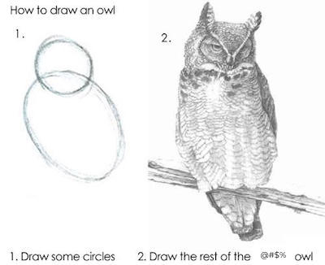

Chapter 2 Design principles
This course is designed with five principles in mind:
- Start with cake
- Cherish day one
- Skip baby steps
- Hide the veggies
- Leverage the ecosystem
2.1 Start with cake
Assuming you like chocolate and strawberries, which of the following images is more likely to make you want to learn to bake a cake? I’m guessing the answer is the image on the left: the cake.
The teaching philosophy of this course builds on this same idea. We first show the students the end result, and then step back and teach the necessary components. Specifically, instead of starting with data structures and functions, we start data visualization. And not just a toy example, but a complex, multivariate data visualization. Of course, we don’t want students feeling like…

The course goes starts out slow and emphasizes iteration. Students are initially provided with lots of scaffolding, and then slowly we take away the scaffolding until they are starting with a blank slate for their final projects.
2.2 Cherish day one
Don’t spend the first day going through the syllabus in detail, aim to get students to make their first meaningful data visualization in 10 minutes! This might sound impossible, and it probably is, if you start by installing R, and then RStudio, and then a bunch of packages, and making sure students have Git working on their computer. You could spend a whole class (or more) on this and not get to a point where every student has their local setup working in an ideal fashion.
Instead, use cloud-based access to RStudio. This could be via RStudio Cloud or an RStudio Server you set up locally at your institution. Find out more about how you can set up your computing infrastructure for friction-less onboarding here.
2.3 Skip baby steps
It’s tempting to start teaching with the simplest examples, e.g. starting data visualization with a bar graph of a single categorical variable instead of a multivariate faceted visualization, especially when teaching programming to build these visualizations since with complex examples comes an extensive amount of code.
Unfortunately very basic data visualizations are rarely as motivating as those telling the story of the relationship between a number of variables at once.
With the right choice of language and syntax, one can achieve the goal of starting with motivating and complex examples, and building up to such examples along the way.
The ggplot2 package, a system for declaratively creating graphics, based on The Grammar of Graphics allows for just this in the context of data visualization.
Similarly, the data wrangling packages dplyr and tidyr work really well with the pipe (%>%) operator in R, which allows for building up your data manipulation and analysis in a step-wise fashion, similar in spirit to ggplot2’s layers.
2.4 Hide the veggies
This is somewhat tongue-in-cheek. Veggies are absolutely good for you, and it is important that you learn to enjoy them. However many people wouldn’t list raw broccoli as their favourite food, however good it might be for them. Similarly there are many aspects of data science and programming that students must absolutely learn and understand the importance of, even if they are not the most exciting part of their data science journey. For example, one cannot do justice to working with text data without discussing regular expressions. However regular expressions are likely going to be a pain point in the learning journey of newcomers with little to no prior programming experience. So, in this course, instead of teaching students the basics of regular expressions as a unit, we hide this topic within the context of web scraping and manipulating text fields into multiple columns to get what we want out of them.
2.5 Leverage the ecosystem
The course materials make heavy use of the tidyverse for data visualization and data wrangling. However, until recently, there was a gap in the R ecosystem for doing basic statistical inference using a syntax that follows tidyverse design principles. This prompted the developments of infer, a package for performing statistical inference using an expressive statistical grammar that coheres with the tidyverse design framework. Using infer to introduce statistical inference makes the transition from the first to the second unit of the course much smoother, and the development of the package as a collaboration between like-minded educators is a great example of leveraging an existing ecosystem to provide a smoother learning experience for students.
Similarly, on the instructor facing side, course organization on GitHub is managed by the ghclass package. And the course slides are built with xaringan, and course website is built with blogdown. Leveraging all of these packages allows the instructor to live and breathe in R for all aspects of running their course.
2.6 Learn more
The following talk titled “Let them eat cake (first)!” describes in further detail and with examples from the course materials each of the design principles outlined above.